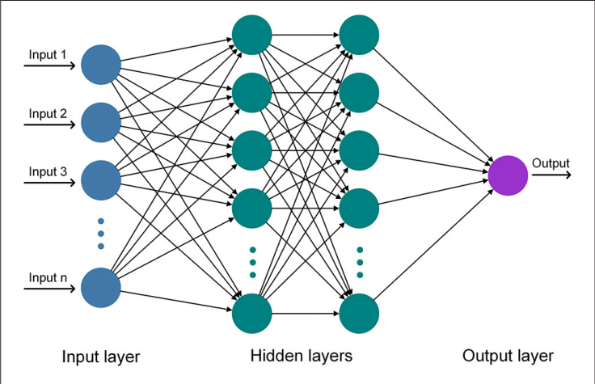

An overview of my 3rd year project
My 3rd Year project was an exploration of the mathematics behind Spiking Neural Networks (SNNs), and their applications specialised visual computing.
Throughout the project, I developed a detailed understanding of both the biological inspirations and mathematical models behind SNNs, as well as hands on experience developing and training complicated neural networks.
It was developed over the duration of the academic year, with the final product consisting of:
By the end of the project I had achieved >90% accuracy the classification of multiple datasets through extensive neural network design. My final grade was 74% overall for this project, ultimately helping me to achieve my first class degree.
To understand the place of SNNs you first need to understand the concept of an ANN and it's shortcomings.
Artificial Neural Networks (ANNs) have defined the landscape of Artificial Intelligence in recent years. They are heavily inspired by the design of natural neural systems such as the brain, and consist of a series of layers of interconnected ‘artificial neurons’ that make subtle adjustments to their input signals to collectively generate a probabilistic output.
Developments in AI, as well as an increase in computing power, have led to the emergence of so-called ‘deep learning’ models. These are extremely large ANNs with more layers and adjustable parameters. This idea is that ‘deeper’ models are able to find and represent more complex and nuanced relationships within a dataset. Most modern "AI" is some form of deep learning.
However, an increased size comes with the caveat of an increased number of connections and layers, i.e. more parameters to optimize, costing time and energy. Training a large language model like OpenAI's GPT-3 is estimated to use just under 1,300 megawatt hours (MWh) of electricity - about as much as 130 US homes use in a year
In trying to develop more energy-efficient AI, we can take inspiration from nature. The human brain can perform the equivalent of an exaflop of mathematical operations (10^18) per second — with just 20 watts of power. By comparison, in 2022, the Oak Ridge supercomputer became the first supercomputer to surpass the exascale speed barrier, but in the process consumed over 22MW. So how is the brain so much more efficient?
The brain manages its power efficiency, in part, because it’s not consistently feeding current through its neurons, instead working with the timing of short bursts of electricity called ‘spikes’. By taking inspiration from this system we can create a more accurate neuron model, leading to more efficient, spiking neural networks (SNNs).
The human brain contains around 86 billion neurons that form 100 trillion connections to each other meaning each neuron might be connected to 1,000-10,000 other neurons. For a neuron to spike, it needs to receive enough of a voltage at its input causing it to excite and fire. Once one neuron spikes, all connected downhill neurons feel it, potentially causing them to spike themselves and in the process decode an input signal.
This is the idea behind spiking neural networks.
At this point in my report there's 12 pages of maths / ML techniques defining the internal behaviour of the SNNs I trained, which I'll spare you, but if you really want to know more this paper is a great place to start.
The brief for my project was to explore at how SNNs could be used in visual computing, but I was specifically encouraged to look at using datasets recorded on neuromorphic cameras. But what is a neuromorphic camera?
In computer imaging and vision, frames serve as the standard structure for visual information. A fixed set of pixels that capture a snapshot of a camera's field of view at a specific moment - essentially a photo. Each pixel is sampled at a constant frame rate regardless of changes in its value, and by recording of frames taken at regular intervals, we end up with time-series visual information (or a video).
But this is not very efficient, as for the most part in any video a lot of the background pixels stay the same, leaving us with a lot of redundant information. What we want to do is generate a sparse reprensentation, where we only record parts of a scene that are changing, instead of capturing the camera's whole view every cycle. So we turn to nature (again).
In the eye/retina what you actually find is there's a combination of cells that only react to sudden changes in incident light, what a neuromorphic camera does is try to emulate this using an array of photoresistors, that log events whenever they detect a fast enough change in light intensity.
It's much easier to see in action in the video below.
This has a few benefits:
The last point is the most important, as it links the whole project together. If you set up a spiking neural network in such a way that each of the "pixels" on the neuromorphic camera is connected to an input neuron on your network, you can treat each event recorded by the camera as a spike and feed it through your network.